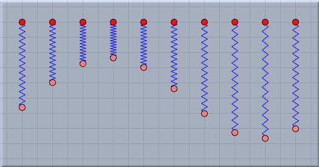
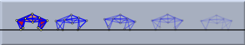
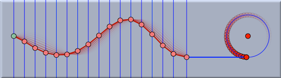
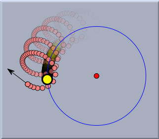
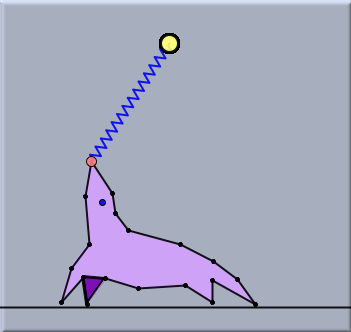
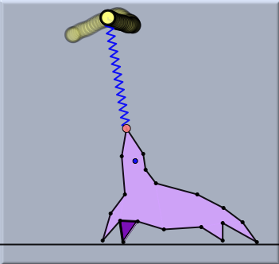

Animations and CindyLab
Many devices in the real world are driven by some kind of motor. On an abstract level, a motor pumps energy into the system. It causes movement that goes beyond the pure interaction of free mass-objects. There are three principles in
CindyLab that allow for the
external actuation and control of a simulated environment.
- Actuation of springs
- Use of a geometric Cinderella Animation
- Use of a CindyScript script to change parameters (such as positions and velocities) of the system
In what follows we shall briefly sketch these three possibilities. Since the number of possible interaction scenarios is practically infinite, we shall again focus only on the basic principles and give a few illustrative examples.
Spring Actuation
Spring actuation is perhaps the most intrinsic way to drive a
CindyLab simulation. It is discussed in the context of
Springs. It can be used to vary the resting length of a spring periodically. If the environment also supplies some friction, then one can use spring actuation to obtain points that exhibit periodic motion. As explained in the
Spring section, one can alter the amplitude and the phase of the actuation independently. The picture below shows several springs all actuated with identical amplitudes but with differing phases.
 |
| Many actuated springs: same amplitude, different phases |
A typical application of actuated springs is the generation of legs for small walking devices, whereby one connects a point to several springs that are actuated with a particular phase shift. In the figure below, the two springs of each leg are actuated with a phase shift of 0.25. Each leg has a phase shift with respect to the other. This results in a cyclic walking behavior of the four legs.
If this device is dropped onto a
CindyLab Floor, it automatically starts to walk like a little animal.
 |
| A walker taking a stroll across the floor |
Geometric Animations
In the geometry part of Cinderella there is a standard way of animating points through the use of
Animation mode. In this way, one can, for example, create rotating points on a circle or moving points on a segment. The animation mode of Cinderella works seamlessly with
CindyLab. One can use animated points and equip them with physical properties or connect them to springs. In the picture below a kind of long elastic rope was created by connecting several rubber bands. One end of the elastic was fixed to the green point at the far left. The other end is driven by a Cinderella animation. The rotating point on the circle is used to move the end of the elastic up and down in periodic motion.
 |
| Animation of an oscillating wave |
Mass-objects can also be used directly in animations. The following example is physically quite unrealistic, but it demonstrates a possible use of mass-objects in animations. Here a
Sun is bound to a circle. An animation causes the sun to revolve around the circle. The picture shows the trace of a red planet under the attraction of a rotating yellow sun.
 |
| A planet revolving about a revolving sun |
Animations are synchronized with the physics simulation. This means that if one moves the animation speed slider, then both the physics simulation and the animation itself become slower.
Driving Simulations with CindyScript
As usual,
CindyScript provides the most flexible and powerful way of influencing a simulation. With
CindyScript one can directly influence the parameters of
CindyLab objects such as
position,
velocity, and
restlength. In this way, whenever the
CindyScript code is executed, one can influence the behavior of the physics objects. As explained in the
CindyScript manual, this scripting language allows execution to take place at a specific time. A detailed list can be found in the
CindyLab and CindyScript section.
In principle,
CindyScript can alter any physics behavior, since it has the "final word" on the parameters of the object. For instance, one can alter the speed of a particle programmatically. The following example shows a simple control loop for balancing a spring by moving one of its points.
 | |
 |
The balancing seal before start
| |
The balancing seal at work
|
The tip of the nose of the seal is point C. The other endpoint of the spring is point D. The following lines of
CindyScript code perform the balancing by changing the horizontal velocity of point C.
if(C.x < D.x,C.vx=C.vx+.05);
if(C.x > D.x,C.vx=C.vx-.05);
C.vx=C.vx+random(0.02);
The first line says that whenever the spring tends to fall to the left, the seal has to accelerate in this direction to prevent the spring from falling. The second line says exactly the same for the other direction. Finally, the last line adds a small degree of randomness to the movement of the seal. This makes the animation appear much more realistic.
Sometimes it is useful to perform
CindyScript actions at specific moments of time. For this there are two different concepts of time within
CindyScript. There is a function
simulationtime() that is synchronized with the internal time of a simulation. Every time step of the simulation increases this value. Alternatively, one can refer to a timer that is synchronized with real time. For this, the
CindyScript functions
time() and
seconds() are useful. For details on this concept please refer to the section
Time on the page
Special Operators.